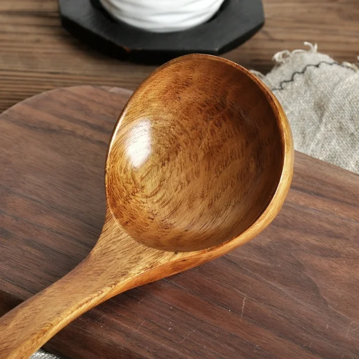
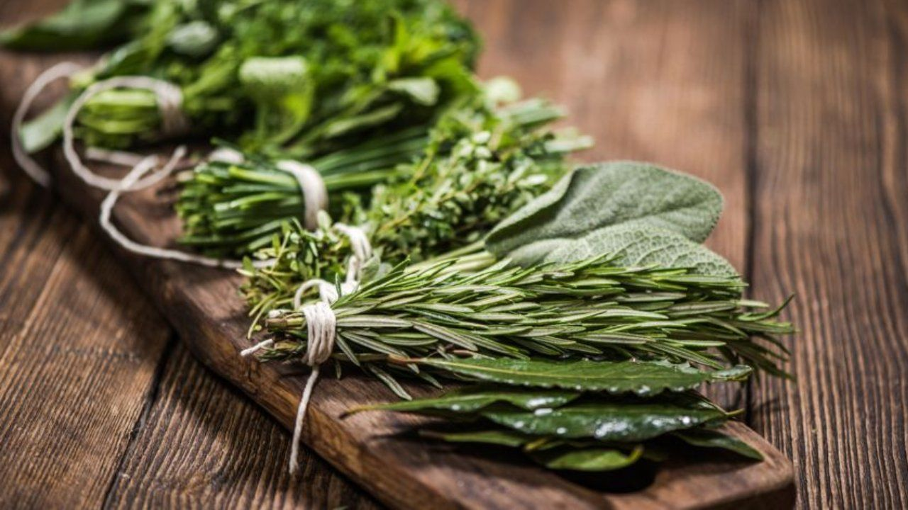
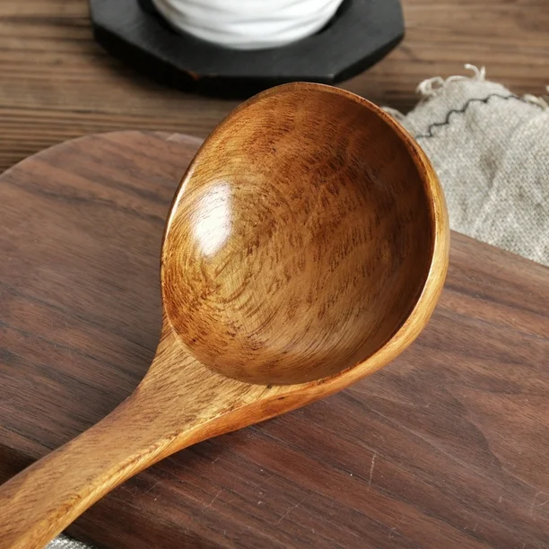
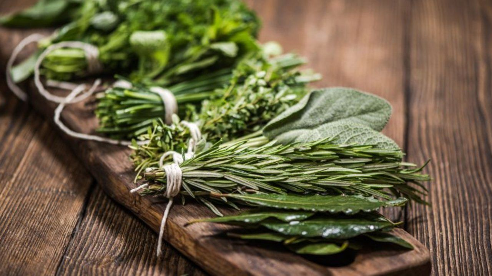

Bienvenido a Rosalbina
Una tradición de sabor familiar con el toque especial de la abuela.
Ver Recetas¿Sabías qué?
Explora datos curiosos del mundo culinario y sorpréndete con ingredientes y técnicas de todo el mundo.
Ir a Curiosidades 


